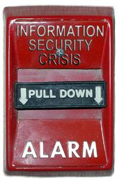

Copyright © This course contains materials from "Survivability and Information Assurance" (copyright 2005 Carnegie Mellon University) with special permission of the Software Engineering Institute at Carnegie Mellon University.
Table
of Contents
1. Prinple 4: Information Assurance Policy Governs Action
3. Information Assurance Policy Governs Actions
5. Topics
6. Topics
10. Policy Elements
11. Topics
12. IA Policy Stakeholders and Contributors
13. Topics
14. Characteristics of An Effective IA Policy
16. Acceptable Use Policy Topics
17. Topics
19. Topics
20. What Administrators Need to Know
21. Policy Topics for Administrators
22. Topics
24. Summary
25. Exam
1.
Prinple 4: Information Assurance Policy Governs Action

This module introduces Principle 4: Information assurance policy governs actions.
The following discussion of security practices is an excerpt from The CERT Guide to System and Network Security Practices [Allen 01]:
Security policies define the rules that regulate how an enterprise manages and protects its information and computing assets to achieve security objectives. Security policies that are documented, well known, and visibly enforced establish expected user behavior and serve to inform users of their obligations for protecting computing assets. Users include all those who access, administer, and manage your systems and have authorized accounts on an enterprise's systems. They play a vital role in implementing security policies.
A policy must be enforceable to achieve its objectives. In most enterprises, the administrators responsible for the technological aspects of information security do not have the authority to enforce security policies. It is therefore necessary to educate management about security issues, the need for policies in specific topic areas such as acceptable use, and then to obtain a commitment to support the development, deployment, maintenance, and enforcement of those policies.
This module should take 2 hours.
The required readings must be done in advance of this class.

2.
Reading Assignments
Required readings:
1. "Introduction to Security Policies" [van der Walt 01]
- Part 1: An Overview of Policies http://www.securityfocus.com/infocus/1193
- Part 2: Creating a Supportive Environment http://www.securityfocus.com/infocus/1473
- Part 3: Structuring Security Policies http://www.securityfocus.com/infocus/1487
- Part 4: A Sample Policy http://www.securityfocus.com/infocus/1497
1. Georgetown University Information Security Policy. [GU]
2. Carnegie Mellon University Computing Policy. [Carnegie Mellon]
3. Your Educational Institution's Computing Policy and Acceptable Use Policy (if a different policy)
Recommended readings:
1. Writing Information Security Policies [Barman 02]
2. RFC 2196 Site Security Handbook [Fraser 97]
3. Selected readings from the SANS Security Policy Project Web site [SANS 01]
4. "Data Security Policy - Structure and Guidelines" [Weise 01]
Required reading - potential substitution
Rather than having the students read the Carnegie Mellon University Computing Policy, have them 1) locate and 2) read your college/university computing policy and acceptable use policy (if not included as part of the computing policy).
Handout
Example policies to be used throughout the lecture. See Principle 4 'Sample Enterprise Security Policy Template' file for a sanitized policy template and example with instructions. Consult the Principle 4 reading list for additional policy examples.
Check Understanding
Ask students for examples of security policies where they work and how well they are communicated and enforced. Capture some of these for use as examples to illustrate points below.
Remind the students to consider whether or not their employer allows them to disclose the types of these workplace security policies.

3.
Information Assurance Policy Governs Actions
4.
Learning Outcomes
Describe principles and elements of policy
Describe the policy lifecycle process
Enumerate characteristics of an effective policy
Describe an administrator's role in policy formulation and implementation
Describe what general questions a user should be able to answer with respect to IA policy
An administrator's job, in large part, is to keep the enterprise's computing infrastructure up and running in a secure manner. But what does this mean? Security policy guides both this process and an administrator's decisions and actions by defining requirements that must be fulfilled. Some occasions when a security policy could help guide actions include the following:
· adding new users to the system or removing users no longer employed by the enterprise
· adding, updating, or migrating to a new asset or to a new asset configuration (e.g., a new operating system)
· configuring a firewall or intrusion detection system including what traffic should be blocked and what alerts are high priority
· monitoring system, network, file and directory, and user activities including determining what constitutes suspicious behavior
Principle 6: Survivable Functional Units are a helpful way to think about an enterprise's networks describes a method by which systems and networks can be constructed to provide reliable service that reflects enterprise policy.

Policies, when written properly, clearly articulate roles, responsibilities, and authority to act, and, as a result, protect and guide administrators.
This lecture will assist an administrator in answering the following questions:
· How should I think about security policies and their implementation?
· What is a useful framework for making security policies real in my enterprise's infrastructure?
· How can the presence of policies protect me?
· How can the absence of policies hurt me?
· How do I go about making changes in policies based on my operational experience?
· What are the consequences for not complying with policies?
· What is my role in ensuring policy compliance and taking action in the event of non-compliance?
5. Topics
Principles and Elements
Stakeholders and Contributors
Characteristics and Examples
Policy Life Cycle Process
What Administrators Need to Know
Policy Knowledge
This lecture describes aspects of IA policy including the following:
· key principles and characteristics to keep in mind when creating, reviewing, and using IA policies, standards, guidelines, and procedures
· the identification and involvement of stakeholders (those who have a vested interest in a policy's specification and enforcement) and contributors (those who participate in policy development, deployment, and maintenance). While including these parties may extend the time required to create draft policy, it greatly accelerates policy implementation and adoption
· examples of some of the more common policy topics, including ones that guide administrator actions and are essential to protect administrators
· the role of administrators in creating, reviewing, implementing, and enforcing IA policies
· the questions an enterprise should ask to determine if employees understand its security policies and if their behavior is consistent with these policies
6. Topics
Principles and Elements
Stakeholders and Contributors
Characteristics and Examples
Policy Life Cycle Process
What Administrators Need to Know
Policy Knowledge
This lecture describes aspects of IA policy including the following:
7.
Policy Principles
All employee actions and behavior are governed by enterprise policy.
Policies are explicit and documented or implicit. If implicit,
· "Use your best professional judgment"
· Word of mouth
· Observing how people behave
Many enterprises do not make appropriate use of policies. "Two-thirds of survey respondents (600 IT professionals) said their company did not have a well-defined company-wide security policy or plan in place, and the majority of those surveyed lack data-handling guidelines and policies" [Briney 01]. Lorraine Ware found that policies are implemented ineffectively in many enterprises [Ware 01]:
In close to half of the companies, employees are provided with information about security policy. However, familiarity with the company's security policies is required of employees in less than one-third of the companies surveyed.
In close to one-third of the companies surveyed, the enterprise's critical information is accessible directly via the Internet. Servers that store critical information communicate directly with other systems that are accessible via the Internet in more than half of the companies.
Employees have access to critical data when they don't necessarily need access. Results of our survey showed that overall, a greater percentage of employees were allowed to access the company's critical information than needed.
Half of the companies in our survey have no system in place to determine if the company's infrastructure is under attack. More than half of the respondents said their company has no automatic procedure or alert in place for escalating security-related events (breach, unauthorized access, or suspicious activity). The majority of companies we surveyed wouldn't know they were attacked or hacked for 24 hours.
Explicit and documented policies are used to guide enterprise decisions and behavior. Users (including administrators) view effective IA policies as useful to their daily work, not as barriers to getting the job done.
Policy is one means for identifying and mitigating IA and security risk.
Policy and technology are complementary; one or both are used to implement an enterprise objective.
Security requirements are satisfied by
· performing asset and risk evaluation as described in Principle 3: Not all data is of equal value - risk must be managed

· establishing, deploying, maintaining, and enforcing information assurance policies
· defining, deploying, and maintaining a technology roadmap for policy implementation that is reflected in infrastructure design and operations as outlined in Principle 8: The road map guides implementation choices (all technology is not equal)
· ensuring that roles and responsibilities are clearly defined including those of administrators
Security requirements derive from an enterprise's mission and business objectives. These objectives provide a strategic understanding of what information assets need to be protected from compromise, damage, and loss. Performing risk management adds clarity and detailed guidance for information asset protection. Risk assessment (as part of risk management) is used to identify critical assets, identify threats to those assets, and formulate asset protection strategies based on identified risks. The presence of security policies demonstrates due diligence in the protection of information assets, which is critical for mitigating legal liability.
Using explicit and implicit security requirements and the enhanced understanding resulting from risk management processes, responsible parties can develop and maintain security policies and responsive infrastructure designs that satisfy these requirements.
Information assurance and security are requirements of infrastructure design, not "after the fact" add-ons. IA policies cannot be directly implemented; they are typically too high level. Policy requirements are further defined in standards, guidelines, and procedures. These artifacts are reflected in design decisions and are made real in an operational infrastructure through subsequent detailed design activities, development, and technology selection and implementation. There is a logical progression of actions for administrators to take; a roadmap can assist them in ordering and prioritizing such actions.
If an enterprise can make difficult strategic decisions about information assurance, it makes the subsequent implementation much easier. Sponsored, comprehensive, and up-to-date policies are critical in meeting an enterprise's IA requirements. There must be a clear, implementable, traceable path from policy specification to policy implementation. These artifacts enhance communication between administrators, security staff, executive management, and key stakeholders, and they provide a common understanding of the foundations required for more effective information assurance [Palmer 01].
8. Importance of IA Policy

As a case in point, it is essential that those responsible for your enterprise's information assets be adequately prepared to know what constitutes a breach to security and to detect if any such breaches have occurred. Without advance planning, policy deployment, and preparation, it is difficult, if not impossible, to determine
· if there has been-or still is-an intruder
· the extent of the damage caused by the intrusion
· how to return affected systems to a known, trusted state
· roles, responsibilities, and the authority to act
Most enterprises have to experience a significant security event or observe this happening to a major competitor or peer enterprise before those responsible recognize the need for comprehensive planning and preparation. If, for example, you depend on your public Web site to conduct a high volume of business transactions or communication, simple Web site defacement or a more serious denial-of-service attack can cause customers such a loss of confidence that they permanently take their business elsewhere.
See also Principle 7: Security Knowledge in Practice (SKiP) provides a structured approach, particularly the Respond step.

Federal, state, and local laws and regulations with which you need to comply are constantly evolving. New and updated technologies are regularly released. Intruder attack methods and the damage they cause are constantly evolving, posing new threats to your information assets. So as part of conducting normal day-to-day business, you need to have processes in place to keep IA policies and their implementation up to date. These changes serve as immediate, updated "marching orders" for the way the enterprise does business [Allen 01].
Having an effective IA policy in place should be considered a prerequisite for being in business. Buying and installing security solutions such as firewalls and intrusion detection systems while having bad policies or no policies is like having cops, courts, and prisons, but no laws [McBride 02].
9. Policies Defined
Senior Management Statement of Policy
· Acknowledgement
· Support
· Commitment
Regulatory
Advisory
Informative
Policies define the rules that regulate how an enterprise manages and protects its information and computing assets in order to achieve their survivability objectives. Policies that are documented, well known, and visibly enforced establish expected user behavior and serve to inform them of their obligations for protecting the enterprise's information assets. Users include all those who access, administer and manage, or have authorized accounts on an enterprise's system. A policy must be enforceable to achieve its objectives.
Survivability polices are less defined and deployed than traditional security policies. As a result, we will concentrate on security policies, with the understanding that most of the practices are the same when developing and deploying policies that deal with overall mission survivability.
Information security policies define the enterprise's rules and expectations regarding access, protection, and accountability of information assets and resources. Security policies are imperative for a sound security implementation. Ideally, policies should be written first, followed by the implementation of technology to enforce them; however, this is often not the case. Federal, state, and local laws may require having policies in place on particular topics. Enacting key policies may be essential to survive a disaster. They may also provide protection from liability or negligence, and form a basis for establishing security controls.
Policies are considered the highest level of documentation from which standards, guidelines, and procedures derive. Ideally, higher-level policies are created first, ensuring alignment with business strategies and objectives. Effective policies are short, concise, and stated in such a manner that they do not need to change frequently.
Policy creation begins with a Senior Management Statement of Policy. This general, high-level statement contains the following:
· An acknowledgement of the importance of computing assets and infrastructure to achieving the business mission
· A statement of support for achieving and sustaining information survivability throughout the enterprise
· A commitment to authorize and manage the definition of the lower level standards, guidelines, and procedures
The Senior Management Statement of Policy is critical to the success of any survivability initiative. Management must understand the importance of planning, controls and protections to the organization's survival. Senior management must publicly support implementation throughout the enterprise. It is inadvisable to go forward without this demonstrated, visible, sustained support.
An enterprise is often required to address regulatory statutes (federal, state, local) due to compliance or other legal requirements. Publicly held organizations develop and implement regulatory policies that are detailed and specific to the industry in which they operate to ensure they can pass a compliance audit.
Advisory policies are security policies that are strongly recommended but not mandatory. However, failing to follow them may result in defined consequences. Most organizations will want their personnel to consider these policies as mandatory. This is a broad category applicable to most policies.
Informative policies exist to inform the reader. These policies contain no specified requirements and are general enough to be distributed to external customers or vendors without compromising confidentiality.
Supporting notes for lecture on regulatory policies
Here are several examples of federal and state legislation that may cause the development and deployment of regulatory policies:
· 1974: Family Educational Rights Privacy Amendment (FERPA) also known as the Buckley Amendment; designed to safeguard student information such as SSN. Non-compliance may result in loss of federal funding
· 1996: Information Technology Management Reform Act (ITMRA), also known as the Clinger Cohen Act, primarily for federal government agencies
· 1997: Health Insurance Portability and Accountability Act (HIPAA), for handling of patient information. Many academic institutions have associated medical facilities and student health centers so are subject to HIPAA.
· 1998: Child Online Privacy Protection Act (COPPA); Certain commercial Web sites must obtain parental consent before collecting, using, or disclosing personal information from children under 13.
· 1999: Gramm-Leach-Bliley Act, for protecting unauthorized disclosure of customer information in financial institutions.
· 2002: Sarbanes-Oxley act after Enron and other accounting improprieties. CEOs and CFOs are required to inform their directors of significant internal control deficiencies that could adversely affect their ability to report financial data. "Major accounting firms now recommend that clients disclose their security plans in much the same way they disclose financial performance" [Leibs 03].
· 2003: A new law in California (effective July 1, 2003) requires businesses that own databases to disclose security breaches if certain personal information was or may have been compromised.
· 2004: "Expected to come into force in 20041, the Basel II Capital Accords require financial services firms to explicitly set aside cash reserves to cover operational and market risk. This is in addition to reserves required for credit risk. Digital security comprises a significant portion of operational risk. Firms that can demonstrate effective management of their e-business portfolio risk will be allowed to reduce the amount of operational set-aside. Therefore, better application security will-literally-be like money in the bank." [Jacquith 02].
Having to meet emerging IA regulations and standards will affect your enterprise and its ability to conduct ongoing operations if it isn't already. Your security standard of due care/due diligence will affect your insurance rates.
10. Policy Elements
|
Standards - Use of specific technologies and configurations Guidelines - Methods for securing systems Procedures - Detailed steps to follow |
|
Policies are considered the first and highest level of documentation and are distinct from standards, guidelines and procedures. Standards, guidelines, and procedures contain the details of the policy, thereby interpreting and implementing policy. Generally, policies should be broad enough so that the underlying standards, guidelines, and procedures can be changed without having to change the overall policy.
These three elements of a policy are separate yet related. Many companies create one document that addresses all of these. However, each element serves a different function and is intended for different audiences so it is best to treat and package them separately. This modular approach eases the policy review and update process.
A standard is typically a collection of system- or procedure-specific requirements that must be met by everyone [SANS 01]. Standards ensure the consistent deployment and uniform use of selected technologies. Using standards reduces unnecessary complexity that can be caused by numerous solutions to the same requirement. Standards often reflect an architectural or configuration baseline that is defined to ensure security is being implemented consistently throughout the enterprise. For example, "All systems shall use a Windows 2000 professional or later operating system and shall be configured to connect to the enterprise domain.," "All Windows 2000 servers shall be configured to only provide the services for which they are intended. All other services shall be disabled or deleted."
Guidelines are a collection of system or procedural recommendations for best practice [SANS 01]. They are not requirements to be met but are strongly recommended. Guidelines take into account the varying nature of information systems. Guidelines may be used to indicate how standards are developed. Effective security policies make frequent references to standards and guidelines that exist within an enterprise. For example, "To avoid losing data, all users should save their important files to their designated network directory/share at regular intervals (daily, weekly)."
Some policies, such as password policies, may include both standards and guidelines. Such guidelines are intended to be mandatory and carry consequences for non-compliance. An example policy that contains both standards and guidelines can be found at the following URL: http://www.sans.org/resources/policies/Password_Policy.pdf [SANS 05a]
Procedures contain the detailed steps that are followed to perform a specific task. The purpose of procedures, the lowest level in the policy documentation hierarchy, is to provide direction for implementing policies, standards, and guidelines. For example, procedures may include methods for proper handling of sensitive information and instructions for what to do in the event of an information security incident.
Well-documented procedures are critical to ensuring the survivability of an enterprise's information assets. Step-by-step instructions for routine tasks like system backups and restores, making changes to firewall access control rules, etc. should be followed, reviewed, and updated as needed. Having and using procedures provides continuity when key staff members depart.
11.
Topics
Principles and Elements
Stakeholders and Contributors
Characteristics and Examples
Policy Life Cycle Process
What Administrators Need to Know
Policy Knowledge
This lecture describes aspects of IA policy including the following:
12. IA Policy Stakeholders and Contributors
The following excerpt from The CERT Guide to System and Network Security Practices discusses the importance of stakeholders and contributors to IA policies [Allen 01]:
As a general rule, policies are more successful if they are developed in cooperation with the people to whom they apply. Users, for example, are in the best position to evaluate how various policy statements might affect how they perform their work. Although middle or senior managers may be responsible for setting overall information security policies, they need to collaborate with administrators, IT staff, security staff, and users in order to define reasonable technological and procedural protection measures for information assets.
When a new policy is first adopted in an established enterprise, not everyone will want to make the behavioral changes to comply with it. The responsible executive must be sure to explain the motivation for the policy. Peers, including those who participated in the development of the policy, can help accomplish this.
The single most commonly expressed barrier to an effective information security program's adoption (including security policies) is the absence of visible, active senior executive sponsorship. The role of senior managers is to actively sponsor and endorse security policies. They make the connection between policies and the enterprise's mission and objectives. They generate awareness through words and actions, thereby reinforcing the importance of security policies. They assign enterprise ownership and responsibility for critical assets.
Legal counsel are responsible for ensuring that security policies
- are legally defensible and enforceable
- comply with enterprise-wide policies and procedures
- reflect known, generally-accepted business practices demonstrating the exercise of due care
- conform to federal, state, and local laws and regulations
- protect the enterprise from being held legally responsible in the event of compromise
- require the preservation of critical evidence including a defensible, documented, chain of custody for all artifacts that may be used in legal proceedings" [Allen 01]
Other stakeholders and contributors in an enterprise include the following:
The human resources department is responsible for ensuring that user/employee rights are properly represented and reflected in security policies as well as ensuring HR's ability to legally enforce and act upon the consequences for policy non-compliance.
Middle managers have much the same role as senior managers but often at a more operational level. They need to ensure that their staff members understand and are acting in a manner consistent with security policies. An IT middle manager has a much larger role in policy formulation, ensuring that policy statements can be reasonably and effectively implemented.
Typically the security department has ongoing responsibility for creating and maintaining the enterprise's security policy including standards, guidelines, and procedures. Security staff is responsible for ensuring that security requirements expressed in the policy can be carried out and are being carried out (through, for example, reviews and audits). For the purposes of this lecture, security staff also includes one or more CSIRTs (Computer Security Incident Response Teams), responsible for ensuring that actions required to detect and respond to a security incident are properly reflected in security policies.
Affected users advise on how security policies may affect their ability to do their work, helping to ensure the proper balance between required infrastructure operational capabilities and the need to operate securely.
Other IT staff (excluding administrators) are often involved in policy formulation and review based on the topic under consideration. If they have responsibility for a critical asset (such as a customer database) or are on the firing line responding to user questions and complaints (such as help desk staff), they need to have a voice in how policies are described and implemented, much the same as affected users.
Outside parties (such as vendors, contractors, partners, and suppliers) have a role to play in policy formulation in areas that describe third-party access to networks and data. Outside parties that can access your enterprise's networks need to demonstrate their ability to comply with your policies.
Administrators play the critical role of ensuring that policy language is clear and can be implemented at a reasonable cost. Administrators need to ensure that policies they require to do their jobs exist and are comprehensive, complete, and accurate. One example is administrators' authority to act in the event of security incidents (including different actions for different types of incidents) and where they need to obtain management concurrence before taking these actions [Wood 05b].
See also Principle 10: Communication skill is critical to reach all constituencies, for additional guidance on crafting messages for various constituencies.

13.
Topics
Principles and Elements
Stakeholders and Contributors
Characteristics and Examples
Policy Life Cycle Process
What Administrators Need to Know
Policy Knowledge
This lecture describes aspects of IA policy including the following:
14. Characteristics of An Effective IA Policy
Traceable to the organization's mission and objectives; long-term focus
Clearly defined scope and language; concise
Involves stakeholders and affected parties
Addresses what, not how
Realistic - balances protection with productivity; enforceable
Role-based
Documented, up to date
Visible and actively enforced; demonstrated senior management sponsorship
Accompanied by awareness and training sessions
It is important to recognize that very few organizations in today's business world have IA policies that demonstrate all of these characteristics. So this material describes the goal state.
Traceable, long-term focus
The relationship between an enterprise's mission and objectives and security policy should be clearly articulated and communicated. Policies should remain relevant and applicable for a substantial period of time, until objectives or requirements change.
Clearly defined scope
If this has not been done elsewhere, security policies should identify what critical information assets are to be protected and at what level. This includes what assets the policy affects and to whom and what parts of the enterprise it applies. Site-specific policies or tailored versions of enterprise-wide security policies may be required to meet the needs of a specific site. Policies need to be stated simply and in plain English.
Involves stakeholders, affected parties
The parties described in the previous slide are actively involved when and where they need to be.
Addresses what, not how
Policies should be stated at the level of principles, objectives, priorities, and strategies. Each policy statement should allow for a range of interpretations and implementations.
Realistic
Policies support accomplishing the enterprise's objectives. By the same token, they must be realistic, balancing the need for protection with the need for users to be productive without undue barriers, and able to be implemented, maintained, and enforced for a reasonable cost.
Role based
Security policies should clearly define roles, responsibilities, accountabilities, and authorities to act. Authority needs to be commensurate with responsibility and accountability. Roles to be covered may include members of boards of directors or other oversight committees, executive and senior managers, middle managers, legal counsel, security officers, human resources, IT managers, and representatives of administrator and key user groups. Policies articulate the role and companion responsibilities that each of these positions has in ensuring that the policy is followed. They describe the enforcement mechanisms that are used to ensure that these roles and responsibilities are carried out. Policies should describe key decisions and scenarios in which authority to act is granted to specific roles.
Documented, up-to-date
Security policies are written down, communicated, and disseminated. All employees understand that these are living documents to which they are held to account. There is a known, visible enterprise process and point of contact for sending policy updates, improvements, and suggestions. Policies are periodically reissued and redistributed. New policy information is included in ongoing awareness and training sessions. Policy implementations are regularly tested and evaluated where appropriate.
Visible and actively enforced
As stated earlier, senior managers actively sponsor and endorse security policies. They regularly make the connection between policies and the enterprise's mission and objectives. They generate awareness through words and actions, thereby reinforcing the importance of security policies. An example would be the inclusion of security policies as a regular topic at senior staff meetings and in program/project reviews.
Awareness and training
All users understand the part they are required to play in ensuring policy compliance. They understand and respect the consequences for non-compliance. To ensure user acceptance of any policies that require their compliance, you may consider requiring each user to sign a statement acknowledging that he or she understands the policy and agrees to follow it. The human resources department often administers this process. Users (including administrators) view effective IA policies as useful to their daily work, not as barriers to getting the job done.
Policies should include provisions for handling exceptions or waivers to the policy under well-described, well-bounded conditions.
15.
Example IA Policy Topics
The policy topics that your enterprise chooses to address depend on your mission, objectives, requirements, and needs. The topics indicated above are a candidate set, examples of which can be found in a number of sources.
Policy topics suggested by the IETF's Site Security Handbook [Fraser 97] include the following:
· Privacy - defines reasonable expectations of privacy regarding such issues as monitoring of electronic mail, logging of keystrokes, and access to users' files.
· Access - defines access rights and privileges to protect assets from loss or disclosure by specifying acceptable use guidelines for users, operations staff, and management. It should provide guidelines for external connections, data communications, connecting devices to a network, and adding new software to systems. It should also specify any required notification messages (e.g., connect messages should provide warnings about authorized usage and line monitoring, and not simply say "Welcome").
· Accountability - defines the responsibilities of users, operations staff, and management. It should specify an audit capability, and provide incident handling guidelines (i.e., what to do and who to contact if a possible intrusion is detected).
· Authentication - establishes trust through an effective password policy, and by setting guidelines for remote location authentication and the use of authentication devices (e.g., one-time passwords and the devices that generate them).
· System and network maintenance - describes how both internal and external maintenance people are allowed to handle and access technology. One important topic to be addressed here is whether remote maintenance is allowed and how such access is controlled. Another area for consideration here is outsourcing and how it is managed.
· Violations reporting - indicates which types of violations (e.g., privacy and security, internal and external) must be reported and to whom the reports are made. A non-threatening atmosphere and the possibility of anonymous reporting will result in a greater probability that a violation will be reported if it is detected.
· Availability Statement - sets users' expectations for the availability of resources. It should address redundancy and recovery issues, as well as specify operating hours and maintenance downtime periods. It should also include contact information for reporting system and network failures.
· Supporting Information - provides users, staff, and management with contact information for each type of policy violation; guidelines on how to handle outside queries about a security incident, or information which may be considered confidential or proprietary; and cross-references to security procedures and related information, such as company policies and governmental laws and regulations.
Barman suggests the following topics and aspects to consider [Barman 02]:
· Physical Security
- Computer location and facility construction
- Facilities access controls
- Contingency planning
- General computer systems security
- Periodic system and network configuration audits
- Staffing considerations
· Authentication and Network Security
- Network addressing and architecture
- Network access control
- Login security
- Passwords
- User interface
- Access controls
- Telecommuting and remote access
· Internet Security
- Administrative responsibilities
- User responsibilities
- World Wide Web policies
- Application responsibilities
- VPNs, Extranets, Intranets, and other tunnels
- Modems and other backdoors
- Employing PKI and other controls
- Electronic commerce
· E-mail Security
- Acceptable use
- Administration
- Confidential communication
· Viruses, Worms, and Trojan Horses
- Type of virus protection
- Rules for handling third-party software
- User involvement with viruses
· Encryption
- Legal issues
- Managing encryption
- Handling encryption and encrypted data
- Key generation considerations
- Key management
· Software Development
- Processes
- Testing and documentation
- Revision control and configuration management
- Third-party development
- Intellectual property
· Acceptable Use (reflects some language from the policy topics above)
- User login responsibilities
- Use of the systems and network
- User responsibilities
- Organizational responsibilities and disclosures
Another set of topics suggested by van der Walt [van der Walt 01] include:
· Physical security
· Network security
· Access control
· Authentication
· encryption
· Key management
· Compliance
· Auditing and review
· Security awareness
· Incident response
· Disaster recovery/business continuity
· Acceptable use
· Software security
As another example, communications policy describes guidelines for establishing communication contacts, channels, and mechanisms, particularly when dealing with a security incident. This includes communication up and down the chain of command, and when, if ever, it is appropriate to bypass levels in the chain (vertical communication); notification of managers and peers at the same level (horizontal communication); the involvement of public relations for interfacing with the press and public; and communication with Internet service providers, help desk personnel, legal counsel, investigations groups, law enforcement agencies, and users. Mechanisms may include verbal conversations (phone, face-to-face), e-mail, pagers, and other forms of written correspondence such as fax, meetings, whether these occur onsite or offsite, and whether they require secure means of communication using various forms of encryption, scrambling, or jamming. This description may need to include communication scenarios to help better describe how channels and mechanisms may be used.
Numerous examples of useful policy language for all types of organizations can be obtained by searching the Web.
Hand out example policies to be used throughout the lecture. See Principle 4 'Sample Enterprise Security Policy Template' file for a sanitized policy template and example with instructions. Consult the Principle 4 reading list for additional policy examples and make appropriate selections.

Acceptable use policy topics and language are discussed next.
16.
Acceptable Use Policy Topics
The purpose of an acceptable use policy is to identify and encourage user behavior that can enhance security and discourage or prohibit user behavior that can reduce or breach security. Users need to know the information assets that require protection and their responsibilities with respect to that protection. The security of many computing assets (desktops, laptops, peripherals, personal digital assistants, etc.) and their access to an enterprise's infrastructure are ultimately the responsibility of users. If users don't understand their security responsibilities and the enterprise's expectations, the technological measures used to enforce security policies will likely be ineffective [Allen 01].
An acceptable use policy describes what a user is authorized to do and not do as a computer professional, and the conditions under which a user can act with authority.
In addition to the topics listed above, additional acceptable use topics include the following:
· special considerations for laptop and home computer use including mechanisms for remote access
· physical theft, sabotage, or intentional destruction of computing equipment
· enabling and use of active program scripting/mobile code (ActiveX, Java, JavaScript, VBS)
· prohibiting the use of company computing resources for illegal or illicit communications or activities (downloading pornography, e-mail harassment) [Briney 01]
17.
Topics
Principles and Elements
Stakeholders and Contributors
Characteristics and Examples
Policy Life Cycle Process
What Administrators Need to Know
Policy Knowledge
This lecture describes aspects of IA policy including the following:
18.
Policy Life Cycle Process
Specifies
· Developer roles in drafting initial policy, and development process
· Reviewer roles, and review process
· Approver roles, and approval process
· Implementer roles, and implementation process
· Enforcer roles, and enforcement process
Developers and development process includes items such as the following:
· Key roles to include by broad policy topics and the designated development leader
· Acceptable timeframes for development of the first draft and availability of the final draft
· Policy template
· The lifecycle process described on the next slide
Reviewers and review process includes key reviewer roles by broad policy topic, review timeframes, and how comments are to be submitted and addressed.
Approvers and approval process includes key approver roles by broad policy topic, approval timeframes, and how comments are to be submitted and addressed. This process also designates what role has final sign off authority.
Implementers and implementation process addresses the following:
· Key roles by broad policy topic
· The creation and/or use of appropriate standards, guidelines, and procedures to implement the new or updated policy
· The creation of an implementation plan including tasks, milestones, and resources
· Identification of awareness and training updates for both implementation and enforcement
Enforcers and enforcement process includes key enforcement roles by broad policy topic, enforcement actions, and any new or updated consequences for noncompliance.
Develop draft policy with key stakeholders
Present to stakeholder groups; address comments
Gain senior management approval and commitment
Disseminate to all users
Incorporate in new and refresher awareness and training programs
Review and update periodically
To meet policy requirements, security must be considered from the beginning.
However, policy statements cannot be directly implemented.
· A more detailed description is required
· Implementations are likely derived from standards, guidelines, procedures, best practices, and administrator experience
What happens without a policy implementation plan that is reflected in infrastructure design and operations?
· The organization and its information assets are vulnerable
· Only inadequate, point solutions are available
· Administrators continually make ad hoc decisions, play catch-up
Security is a requirement of infrastructure design, not an "after the fact" add-on. Security policies cannot be directly implemented; they are typically too high level. Policy requirements, reflected in design decisions, are made real in an operational infrastructure through subsequent detailed design activities, development, and technology selection and implementation. There is a logical progression of action for administrators to take. A plan can assist an administrator in ordering and prioritizing such actions.
Without a plan, policy implementers run the risk of deploying a piecemeal solution that only addresses specific needs, not the overall security architecture required to effectively meet policy requirements. Keep in mind the adage, "security is only as strong as its weakest link." Relying only on comprehensive perimeter protection in the form of firewalls and intrusion detection systems is an incomplete protection strategy with a historical precedent in the Maginot Line in World War II. Localized security technologies are a short-sighted, "fingers in the dike" solution and often result in crisis management and a high degree of vulnerability. The absence of a plan perpetuates erroneous thinking (the latest, hot security technology will protect our infrastructure from today's threats), wastes precious resources, and undermines an administrator's ability to make the case for improvement when the latest technology fails to protect in the face of a new attack.
19.
Topics
Principles and Elements
Stakeholders and Contributors
Characteristics and Examples
Policy Life Cycle Process
What Administrators Need to Know
Policy Knowledge
20. What Administrators Need to Know

An administrator's security goals are largely determined by the following key tradeoffs [Fraser 97]:
1. Services offered versus security provided - Each service offered to users carries its own security risks. For some services, the risk outweighs the benefit of the service and the administrator may choose to eliminate the service rather than try to secure it.
2. Ease of use versus security - The easiest system to use allows access to any user and require no passwords; that is, there is no security. Requiring passwords makes the system a little less convenient but more secure. Requiring device-generated one-time passwords makes the system even more difficult to use, but much more secure.
3. Cost of security versus risk of loss - There are many different costs to security: monetary (i.e., the cost of purchasing security hardware and software like firewalls and one-time password generators), performance (i.e., encryption and decryption take time), and ease of use (as mentioned above). There are also many levels of risk: loss of privacy (i.e., the reading of information by unauthorized individuals), loss of data (i.e., the corruption or erasure of information), and the loss of service (e.g., the filling of data storage space, usage of computational resources, and denial of network access). Each type of cost must be weighed against each type of loss.
An administrator needs to be fully cognizant of all security policies, standards, guidelines, and procedures and keep abreast of changes to these documents. In particular, administrators need to understand their role in ensuring policy compliance and identifying actions that violate policy. An administrator needs to take the initiative to raise questions of policy interpretation and ensure that policies exist to cover all actions for which an administrator is held responsible.
An administrator generally plays the role of technology expert and is likely the key implementer. As a result, an administrator needs to ensure that policy language is implementable and enforceable during the review process. An administrator will be increasingly involved as the policy language is interpreted and specified in more detail.
In Real World Linux Security: Intrusion Prevention, Detection, and Recovery [Toxen 01], Toxen says, "The degree of authority that an administrator should have to detect and correct policy noncompliance should depend on the criticality of the noncompliance. For example, a computer that provides an unauthorized and insecure bridge to the Internet around the firewall should be disconnected immediately, possibly impounded pending resolution and scanning for intrusions, and the user severely reprimanded or worse. An account used improperly or which contains software that has not been approved or unacceptable images should be disabled immediately by the administrator and then, when the system is secure, the administrator can follow up with the user and management as appropriate. If policy forbids personal e-mail, a gentle verbal warning following a violation is probably called for." [Toxen 01]
Often an administrator will be asked to participate in training users on how to comply with new policy actions and helping new administrators better understand their role and any constraints with respect to policy implementation and enforcement.
21. Policy Topics for Administrators
Authority and conditions for monitoring user activities (e.g., reading user e-mail)
Accessing protected programs or files
Disrupting or terminating service under specific conditions
Adding and changing users, user groups, user privileges, and authentication mechanisms
Authority and conditions for using vulnerability testing, penetration testing, and password cracking tools
Enforcing acceptable use policy provisions and prohibitions
As stated above under IA Policy Stakeholders and Contributors, administrators play the critical role of ensuring that policy language is clear and can be implemented at a reasonable cost. Administrators need to ensure that policy topics they require to do their jobs are included, and that they are comprehensive, complete, and accurate. One example is an administrator's authority to act in the event of a security incident (including different actions for different types of incidents) and where they need to obtain management concurrence before taking action (such as taking a system or network off line) [Wood 05b].
Administrators typically have an increased level of privilege (access, enforcement) over normal users. With this increased level of access comes greater responsibility, accountability, and authority. These rights and privileges need to be articulated in security policy language specifically directed to administrators. This policy should be carefully drafted and reviewed by administrators to ensure that it fully describes the rights and protections they require to perform their job responsibilities.
In addition to the above, here are three policy topics that administrators need to consider [Barman 02]:
· Maintenance - Policies should require that administrators regularly maintain public data areas such as Web server content, ftp repositories, etc. Public data areas can serve as upload areas for hacker tools.
· Outsourcing - Example language: Administrators shall be responsible for ensuring that servers providing information or services to Internet users are properly maintained. Servers operated by other providers (co-located or off-site) shall be maintained as specified in service level agreements.
· Enforcement - Example language: Administrators shall enforce all policies in accordance with established procedures. Such procedures address monitoring and preserving information in a manner that allows appropriate action to be taken in the event of a policy violation. Such procedures include preserving evidence for disciplinary actions for employees and legal actions for external violators.
Other considerations for administrators that can result in policy non-compliance by administrators [Lancaster 03]:
· Like the cobbler's children who have no shoes, system administrators often have no awareness of security requirements that apply to them. Well, more correctly, they often ignore such requirements. In fact, I can't tell you how many times I've seen security audits detect some outlawed application on the network, and then traced it back to an administrator's machine. As recently as two weeks ago, I was at a large company, where the head of their standards setting "Security Counsel" was running a Kazaa server on his workstation.
· One of the reasons this is true is that network administrators spend half their time building and tweaking and testing equipment, whether it's firewalls, PCs or routers and switches. And the other half of their time, they spend maintaining their networks with all sorts of specialized tools. These activities are very "high risk" and there are a lot of steps administrators should take to minimize their risk.
· First, build a lab or "build" a network, separate from your production network, in which you can build and test equipment, without worrying about what level of patches or service packs you have. Usually, you'll want to 'dual-home' a file server so that you can download necessary files, or better yet, burn the files you need to CDs. Using a Windows server to do "Port Address Translation" is also an option, as it can help prevent access into this private lab and only takes a few clicks to set up. This will help alleviate the problem of unauthorized programs running on administrators' workstations.
· Next, get an accurate inventory of all your network management stations. Lots of administrators re-deploy old PCs to run network management tools like MRTG (multi-router traffic grapher) or to act as route servers or boxes to collect syslogs, etc. Unfortunately, these systems are highly susceptible to worms, as they are often overlooked when new patches are released; having a valid, up-to-date list will help with this problem.
· Distributed or dedicated protocol analyzers, running on Windows OS are also vulnerable. Keep them updated, or shut them off when they're not in use. Finally, don't allow these boxes to belong to the same Windows Domain as your production servers.
See also Chapter 7, Establishing Security Policies, in Real World Linux Security: Intrusion Prevention, Detection, and Recovery [Toxen 01] and Appendix A-1, Information Security Policy, in Information Security Architecture: An Integrated Approach to Security in the Organization [Tudor 00, specifically].
22. Topics
Principles and Elements
Stakeholders and Contributors
Characteristics and Examples
Policy Life Cycle Process
What Administrators Need to Know
Policy Knowledge
23.
IA Policy Knowledge
For security policy to be part of an enterprise's way of doing business, senior managers, middle managers, security trainers, security staff, and administrators must periodically ask all users (and themselves) these questions and receive satisfactory and correct responses. Indications of lack of awareness and knowledge serve as a signal for improvements in the security training program.
24. Summary
Discussion 20 minutes
Real World Problem Cases Caused By Missing Policies
Describe 2-3 IA/security policy scenarios. Students analyze what policies are being enforced, what policies are missing, and the impact and risks of missing policies [Wood].
Outcome should describe what policies are being enforced, what policies are missing, and the impact and risks of missing policies. Also elicit and use students' own experiences with their enterprise's security policies.
Lack of Acceptable Use Policy
Scenario: A clerk spent a great deal of time surfing the Internet while on the job. Management discovered that the clerk had downloaded a great deal of pornography. Using this as a reason, management fired him. The clerk chose to appeal the termination with the Civil Service Board, claiming that he couldn't be fired because he had never been told that he couldn't download pornography.
Outcome: Because there was no policy specifying what constituted excessive personal use, management could not discipline this employee. After a Civil Service hearing, the board ordered him to be reinstated with back pay.
Lack of Personnel Management and Least Privilege Policy
Scenario: The manager of data processing took a job with a competing law firm. Because his former employer had nobody who could do the job that he did, they kept him on as a contractor. On a part-time basis, he performed systems management tasks. In order to do these tasks he needed full privileges on the former employer's network. One day the former employer learned that the manager's new employer was opposing them in a high-visibility lawsuit. Could the former data processing manager gain access to the shared legal strategy files for this case on the network?
Outcome: The answer was yes, but nobody knew whether the manager had exploited these capabilities because no data access logs were being kept. This situation could have been avoided if the former employer had policies about conflicts of interest, system access privileges, and keeping logs.
Lack of Account Management Policy
Scenario: A senior reporter left the newspaper currently employing him, and shortly thereafter, the newspaper had trouble because the competition consistently picked up on their exclusive stories (scoops). An investigation of the logs revealed that the former employee had been consistently accessing their computer to get ideas for stories for his new employer.
Outcome: The former employer, a local newspaper, had no policy requiring the termination of user-ID and password privileges after an employee left.
Lack of Virus Alert Handling Policy
Scenario: A virus hoax sent by e-mail through the Internet indicated that if people receive a message with the heading "Join the Crew," they should not read it. The hoax went on to state that this e-mail would erase a hard drive if ever it should be displayed. Thinking that they were doing others a favor, 10% of the staff at a large manufacturing company broadcast the hoax to all the people they knew.
Outcome: They flooded the company's internal networks with e-mail and caused a great deal of technical staff time to be wasted unnecessarily. There was no policy defining how they should handle these warnings,
Lack of Employee Data Protection Policy
Scenario: A thief made off with a computer disk containing detailed personal data and bank account information on more than 20,000 current and former employees of a large manufacturing company. This became public information.
Outcome: The press speculated that this theft could be used to facilitate identity theft, including application for credit cards in the names of other people. The event precipitated a massive notification process including recommendations on changes to bank account numbers. The large manufacturing company found itself facing a public relations nightmare. It had no policy requiring employee private data to be encrypted when held in storage.
Lack of [Privacy] Policy Enforcement
Scenario: A Navy enlisted man registered with an Internet online service company and filled out a profile form, which indicated that he was gay. An employee at the service company, after an inquiry from the Navy, shared this profile information with the Navy's "top brass." Based on this information, the enlisted man was given a dishonorable discharge.
Outcome: The enlisted man sued the Navy for violating its own "don't ask, don't tell" policy, and won an honorable discharge with retirement benefits as a result. The online service company publicly stated that its employee had violated "the privacy policy," but this policy had been violated on multiple occasions before including top management's publicly stated intention to sell customer home telephone numbers to telephone marketers. At least the service firm now admits that it has a policy.
Here are two examples from an administrator's perspective:
1. Lack of Vulnerability Analysis Policy: There are a number of anecdotal cases of an administrator using password cracking tools (to test whether or not users are following the password policy) or network mapping software (to check for open ports and update network topologies) and then getting fired or suspended for inappropriate access or system disruption when using these tools
2. Lack of Network Traffic Policy: It is extremely difficult, if not impossible, to configure a firewall properly if security policies have not been created. A firewall is, by definition, an enforcer of security policies.
Although not used until the last course, "Sustaining, Improving and Building Survivable Functional Units," there exists an XYZ Company Information Security Policy_Manual-INSTRUCTOR.pdf and a corresponding XYZ Company Information Security Policy_Manual-STUDENT.pdf, which could be used in this "Principles of Survivability and Information Assurance" course in this policy module. PDF versions of these two manuals are provided in the Supplemental Materials section for this module. Note carefully that these policy manuals do have known deliberate errors (omission and commission) in them (as they are used in exercises in the "Sustaining, Improving and Building Survivable Functional Units" course). Naturally there are unknown errors too.